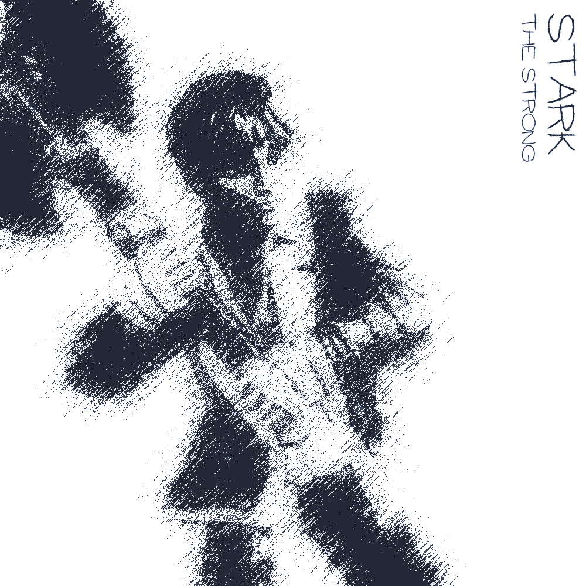
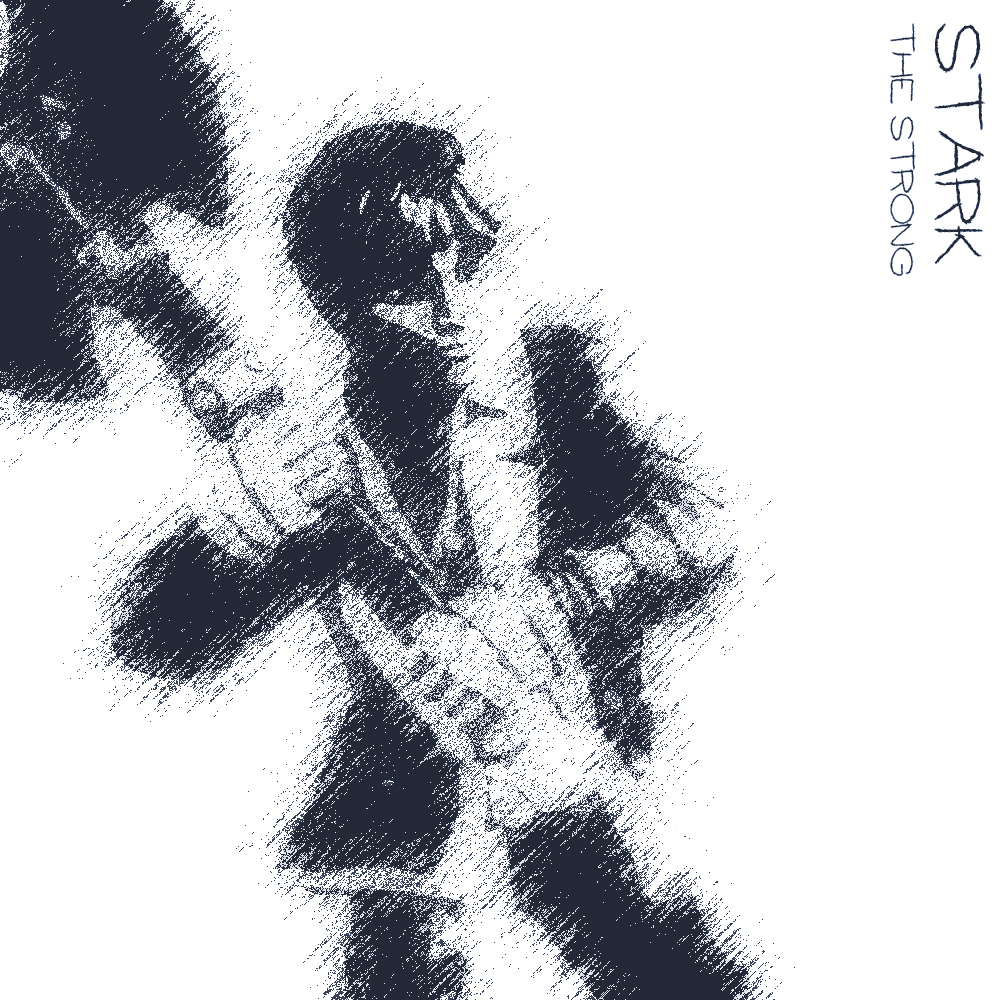

☰
Stark
Stark, je čtvrtork, jak nezapomene připomenout každému, kdo by jen naznačil, že je orkem. V Pełzaczi pomáhal u Statkáře Jeszeta a následně se vydal s družinou a Jeszetovou karavanou do Garagoru.
Margaret
Dobrodružství, která sprožil:
- Doprovod karavany
- - doprovod zboží do Garagoru, potkání Narmera a Neery
- Průzkum rozbitých chodeb podzemí
- - průzkum podzemních komplexů, na který dostal Emer zakázku, Stark zde ukázal, jak umí vzít zbraň do ruky a prokázal se jako prvotřídní bojovník schopný schytat pár ran
- Hledání Neery pt.1
- - Neeru někdo unesl, vyšetřování kdo jí unesl, Perlíkův moment boje, setkání s GGG a Alocou
- Hledání Neery pt.2
- - Neera se konečně dostala do Věže, kde družinu přivítal Raistlin a slíbil, že Neera se bude učit a bude mít ve Věži útočiště
- První práce pro Narmera
- - Narmer družině řekl, že potřebuje aby pro něj sehnali magický předmět, který měl kdysi Ferfi Devon, boj s pavouky, boj s nemrtvými (ghúlové a hobbit-sized skeleton) a fextem.
- Tribunál Velkého Čaroděje pt.I
- Do Pełzacze přijela Garagorská stráž se zatykačem na Huga. Družina s Dernhelmem to vyřešila/pozdržela a vydala se do Garagoru zjistit, co se děje. Našli sérii dalších falešných zatykačů a zjistili, že je vydává V.Č., našli obviněného Toníka, který jim řekl o Tribunálu Velkého Čaroděje.
- Tribunál Velkého Čaroděje pt.II
- Družina hledá tři Soudce. Pomocí stop vypátrali soudkyni Justii Kroell, tu byli nuceni zabít. Poté našli Voletha Dranna, toho vyslechli a nechali ho jít, protože zjistili, že je jen tragickým nečinným přihlížejícím. Ten je ještě varoval před posledním soudcem Borwaldem Gellem. Zuana byla zatknuta a odvedena.
Half-orc Warrior
 
